7 Finite State Machines (FSMs)
FSM is a discrete-time model of a stateful system.
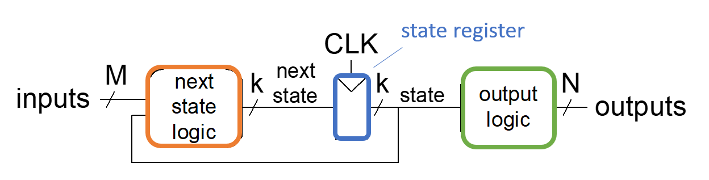
Consists of:
- Next state logic - logic to determine what the next state will be
- State register - stores the current state and loads next state at clock edge
- Output logic - logic that generates the output
Key Elements of FSMs:
- A finite number of states
- A finite number of external inputs
- A finite number of external outputs
- An explicit specification of all state transitions
- An explicit specification of what determines each external output value
7.1 Moore Machine
A Moore Machine is an FSM whose next state is determined by the current state and the inputs, and outputs depend only on the current state
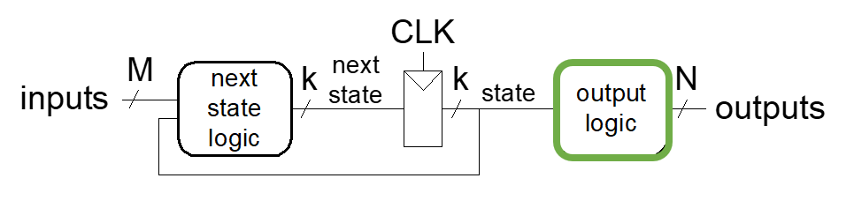
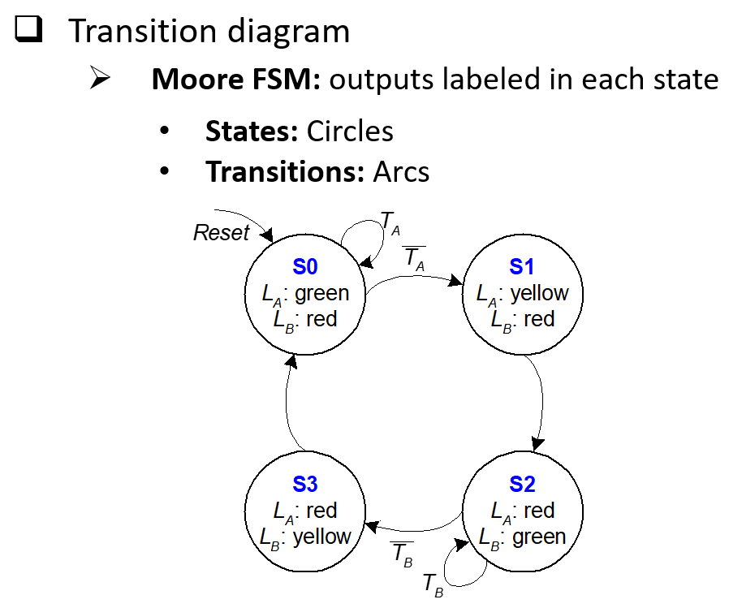
7.2 Mealy Machine
A Mealy Machine is an FSM whose next state is determined by the current state and the inputs, and the outputs depend both on the current state and the inputs
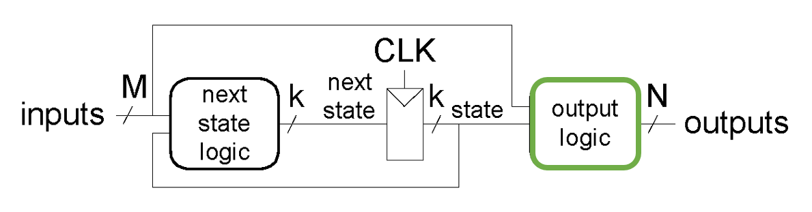
7.3 FSM Factoring
FSM Factoring is to break down complex FSMs into multiple smaller FSMs in order to simplify. We do so since we know that the output of an FSM can serve as an input to other FSMs
7.3.1 Example
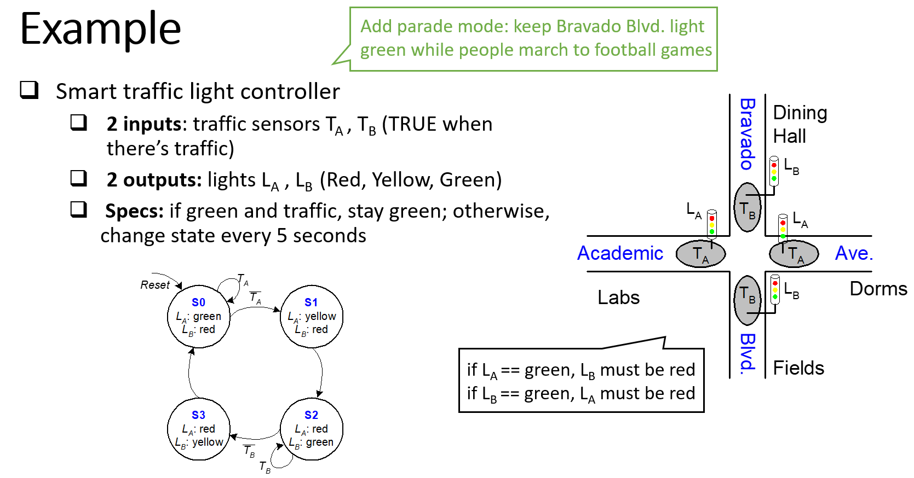
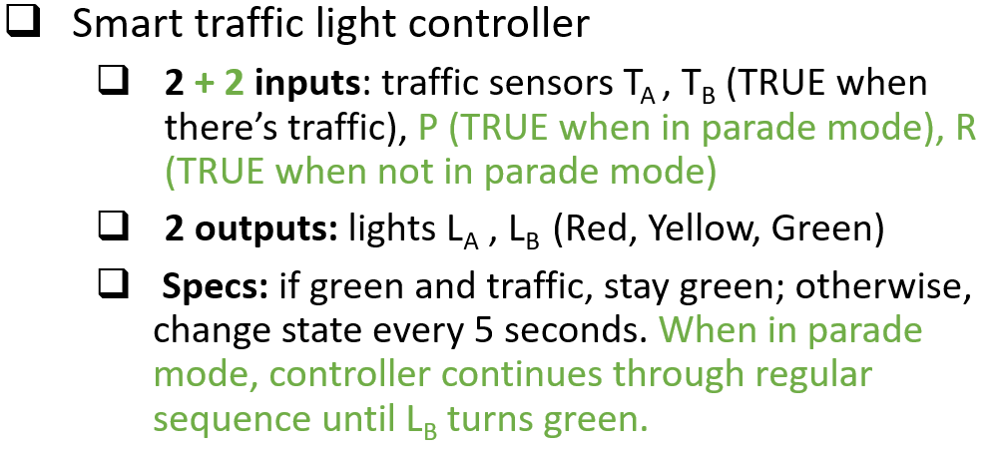
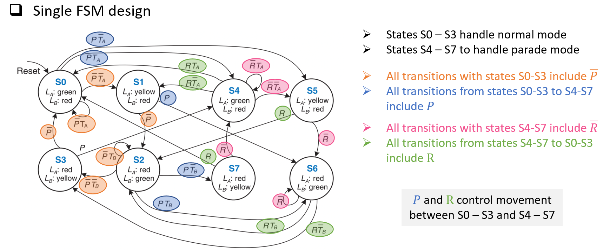
What if we had one FSM to control transitions between regular mode (S0 – S3) and parade mode (S4 – S7) and another FSM to control the lights?
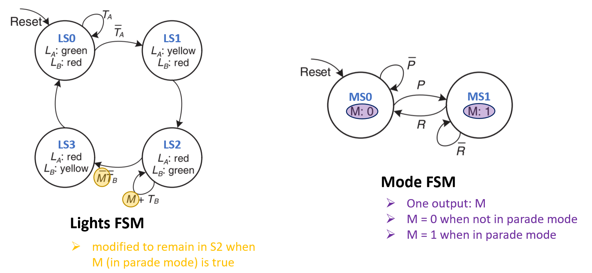
7.4 State Reduction / Minimization
State reduction is reducing the number of states in an FSM without changing its function. Reducing staes allows us to minimize size of state registers and complexity of next state and output logic.
If two states in an FSM are found to be equivalent, one state can be removed, and all transitions to that state can point to the other state.
Two states are equivalent if:
- Both states assign the same values to outputs
- For all possible inputs, the output/next state will be the same starting from either state
For large FSMs, inspection may not be efficient way to do state reduction. Alternative is to use implication chart method (aka state merger table)
To fill out the implication chart:
- Entry \(X_{ij}\) - Row is \(S_i\), Column \(S_j\)
- \(X_{ij}\) contains next states of \(S_i\) and \(S_j\)
- \(S_i\) is equivalent to \(S_j\) if outputs are the same and next states are equivalent
- If \(S_i\), \(S_j\) have different output behavior, then cross out \(X_{ij}\)
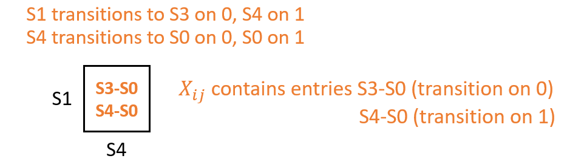
7.4.1 Example
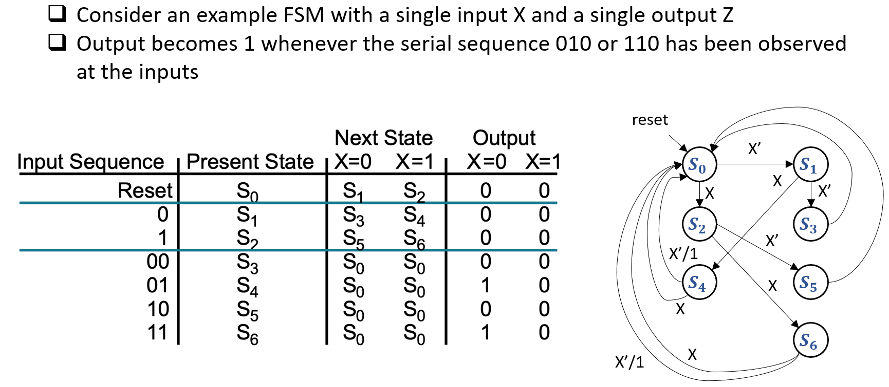
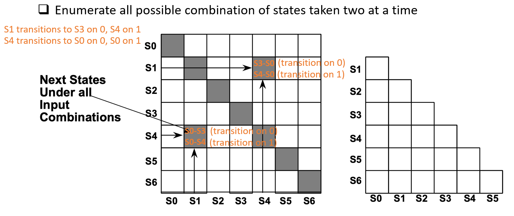
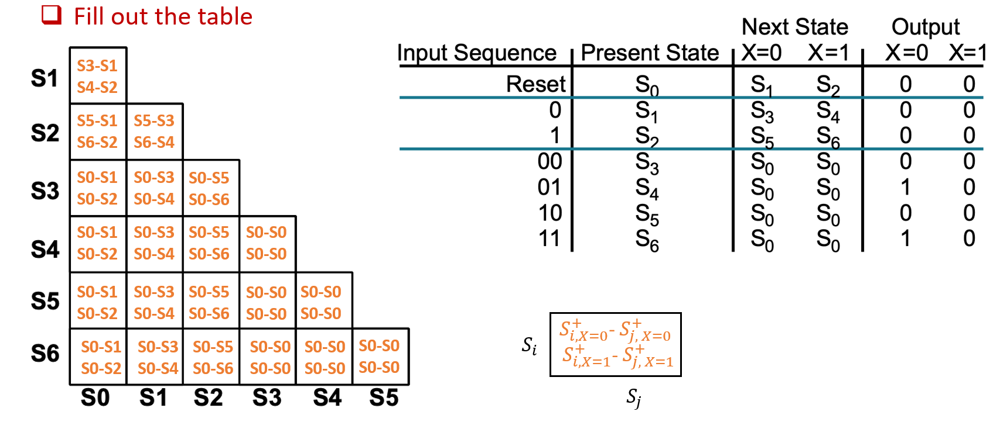
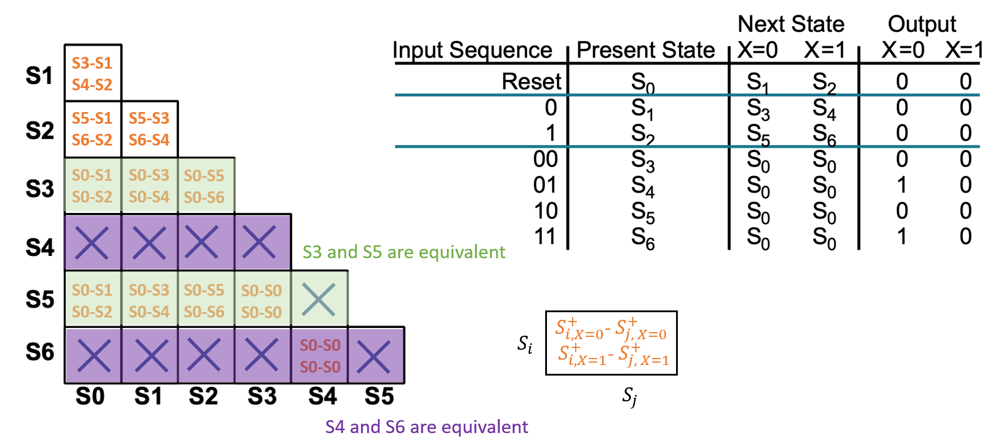
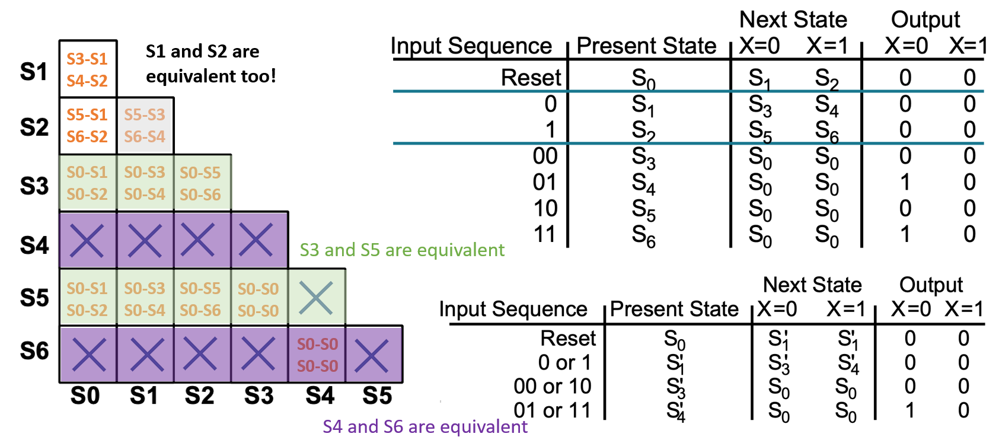
7.5 Moore to Mealy and Mealy to Moore
7.6 Schematic to FSM
Steps to go from a schematic to an FSM:
- Find inputs, outputs, and state bits
- Write next state and output equations
- Write and reduce next state and output tables
- Create state labels
- Rewrite next state and output tables with state names
- Draw state transition diagram
7.6.1 Example
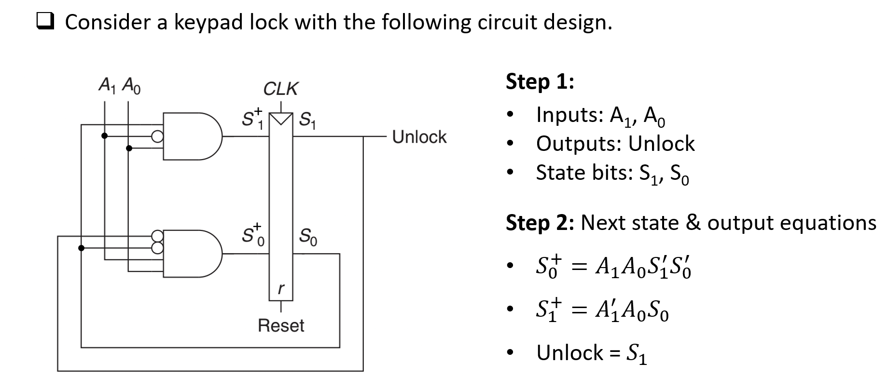
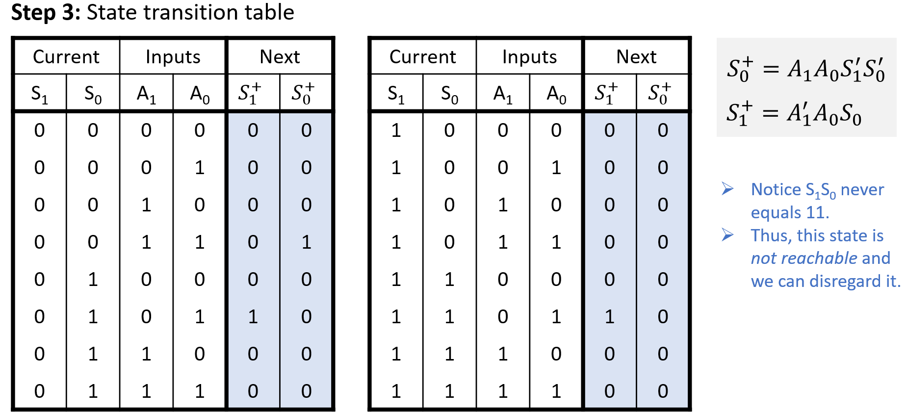
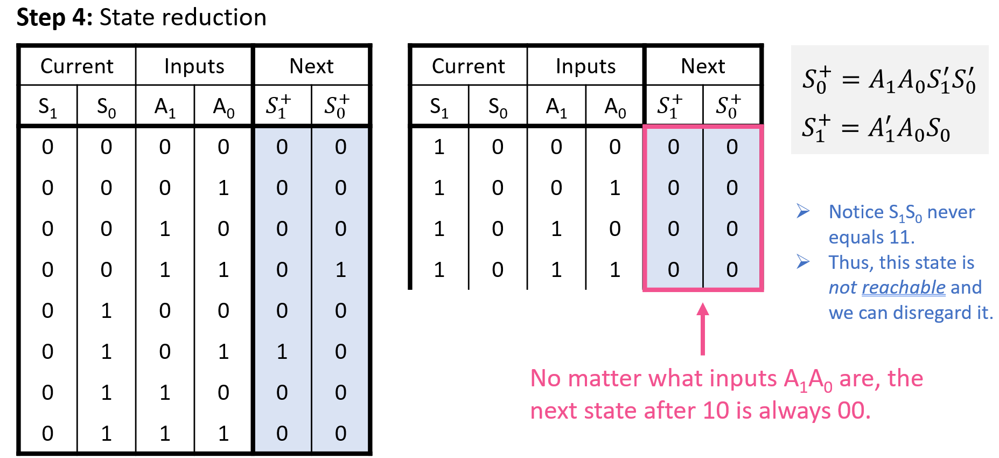
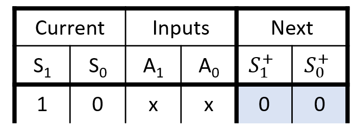
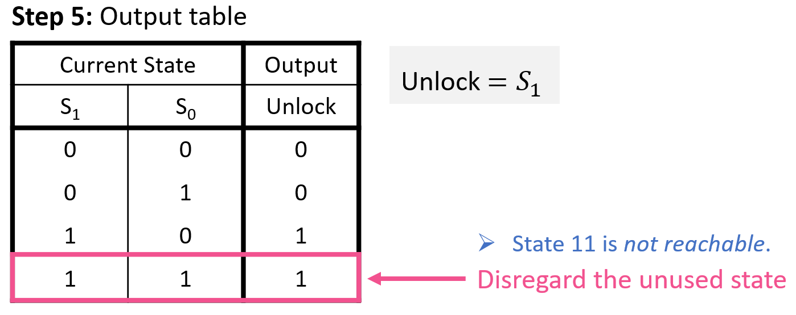
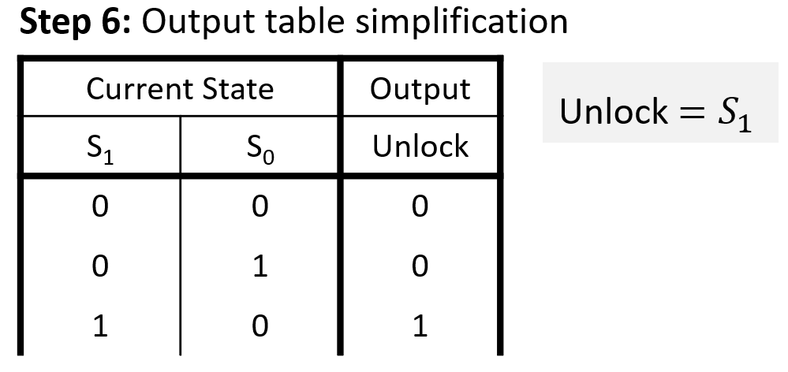
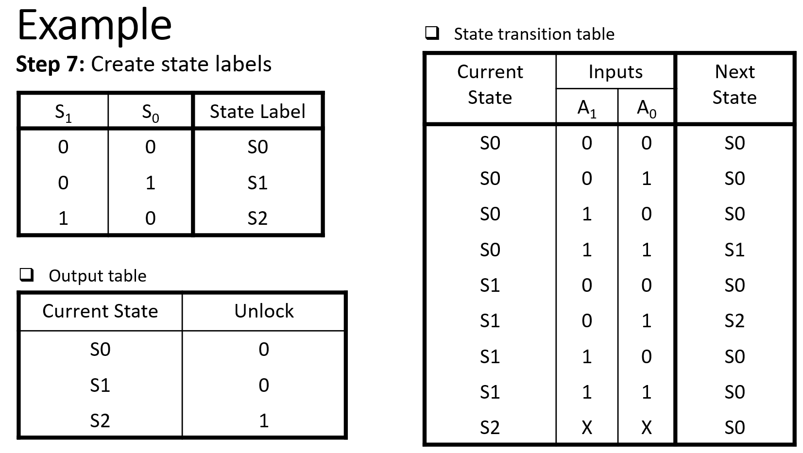
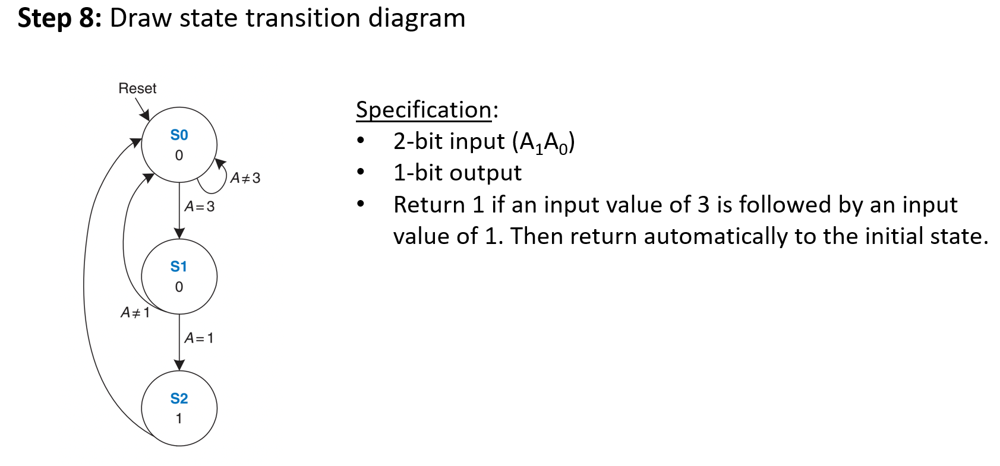